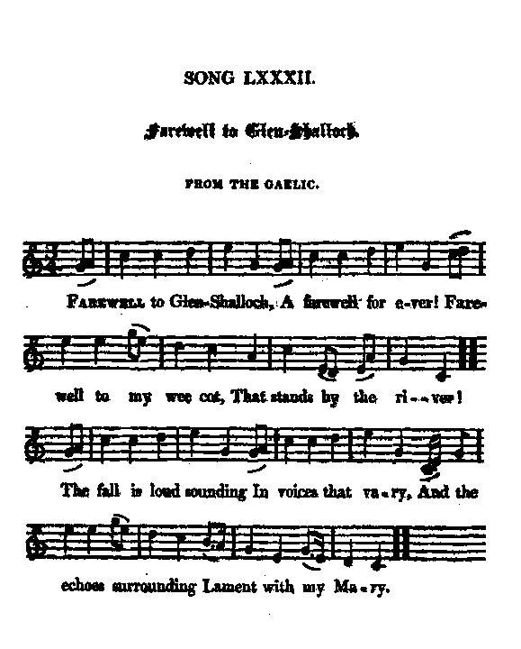
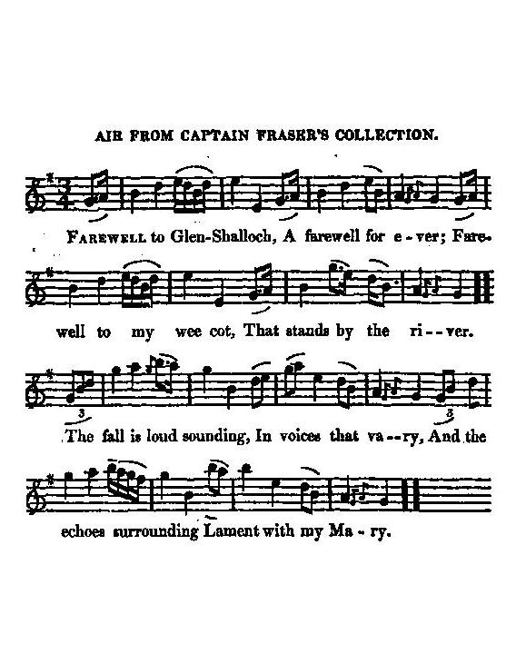

Farewell to Glen Shalloch
Adieu à Glen Shalloch
An incitement to revenge, from the Gaelic
Tune - Mélodie"McGregor-a-Ruara"
from Hogg's "Jacobite Relics" 2nd Series N°82
Alternative tune
"Bothan na easan" (The Cottage adjoining the Fall), from Simon Fraser's Collection N°171, 1815
(Sound background to this page)
Tunes sequenced by Christian Souchon


|
To the tune:
"This beautiful Highland ditty has likewise an original air of its own, one of the most simple and sweet things existing; but Mr Stenhouse, in his friendly exertions to put every thing to rights, has changed it for " M'Gregor-a-Ruara," that every one might know it, and be able to sing it with due effect. The true air is however to be found in Captain Frazer's work, where it is called, I think, " Bothan an Eassain," ( ="The Cottage adjoining the Fall", N° 171). The verses are closely from the original, and there are few that can compare with them." |
A propos de la mélodie:
"Ce beau chant des Highlands a également une mélodie qui lui est propre, parmi les plus douces et les plus simples qui existent. Mais M. Stenhouse, croyant sans doute bien faire, l'a remplacée par "McGregor-a-Ruara", que tout le monde connaît, afin que chacun puisse le chanter sans en trahir le caractère. Mais l'air véritable se trouve dans le recueil du Capitaine Fraser, sous le titre, je crois, de " Bothan an Eassain," (La chaumière près de la cascade, N°171). Les vers suivent l'original au plus près et il est peu de poésies qu'on puisse leur comparer." |

|
FAREWELL TO GLEN SHALLOCH
From the Gaelic (*) 1. Farewell to Glen-Shalloch A farewell for ever! Farewell to my wee cot, That stands by the river! The fall is loud sounding In voices that vary, And the echoes surrounding Lament with my Mary. 2. I saw her last night, 'Mid the rocks that enclose them, With a babe at her knee And a babe at her bosom : I heard her sweet voice In the depth of my slumber, And the song that she sung Was of sorrow and cumber. 3. " Sleep sound, my sweet babe, "There is nought to alarm thee; " The sons of the valley " No power have to harm thee. " I'll sing thee to rest " In the balloch untrodden, " With a coronach sad " For the slain of Culloden. 4. " The brave were betray'd, " And the tyrant is daring " To trample and waste us, " Unpitying, unsparing. " Thy mother no voice has, " No feeling that changes, " No word, sign, or song, " But the lesson of vengeance. 5. " I'll tell thee, my son, " How our laurels are withering; " I'll gird on thy sword " When the clansmen are gathering; " I'll bid thee go forth " In the cause of true honour, " And never return " Till thy country hath won her. 6. " Our tower of devotion " Is the home of the reaver; " The pride of the ocean " Is fallen for ever ; " The pine of the forest, " That time could not weaken, " Is trode in the dust, " And its honours are shaken. 7. " Rise, spirits of yore, " Ever dauntless in danger! " For the land that was yours " Is the land of the stranger. " O come from your caverns, " All bloodless and hoary, " And these fiends of the valley " Shall tremble before ye!" (*) To know the meaning of this phrase click here Source: "The Jacobite Relics of Scotland, being the Songs, Airs and Legends of the Adherents to the House of Stuart" collected by James Hogg, volume 2 published in Edinburgh by William Blackwood in 1821. |
ADIEU A GLEN SHALLOCH
Traduit du gaélique (*) 1. Glen-Shalloch, il faut que je te quitte, Que je te quitte à jamais, O! Adieu, ma chaumière si petite. Qui dans la rivière se mirait! (bis) La cascade au loin fait entendre Des voix qui modulent sans fin, O! Que les échos viennent reprendre: Ils disent, Marie, ton chagrin. (bis) 2. La nuit dernière encor je t'ai vue Dans ce rocailleux écrin, O! Un enfant s'agrippait à ta jupe, Tandis qu'un autre tétait ton sein. (bis) Et je percevais ta voix suave Au plus profond de mon sommeil, O! Et ton chant en l'honneur des braves Etait de douleur et de deuil. (bis) 3. "Dors, mon enfant chéri, dors bien vite, Tu n'as rien à redouter, O! Le Bas-Pays et ceux qui l'habitent Pour toi ne seront pas un danger. (bis) Je chanterai pour que tu dormes Sur le lit d'ajonc non pilé, O! Le chant funèbre, triste et morne Des victimes de Culloden. 4. "Au traitre a succombé le courage, Et le tyran se complait, O! Dans la destruction et le carnage, Sans ménagement et sans pitié. (bis) De même que sa voix ne change, Ta mère n'a d'autre penser, O! D'autre désir qui se mélange A l'obsession de se venger. (bis) 5. "O mon cher fils, apprends de mes lèvres Que nos lauriers sont flétris, O! Ta mère un jour te ceindra du glaive Quand ceux du clan seront réunis. (bis) Je dirai qu'il faut que tu partes Défendre l'honneur et le droit, O! Que de ce but nul ne t'écarte, Ou bien alors, ne reviens pas! (bis) 6. "On a fait des tours de nos églises Des repaires de brigands, O! Et nos voiles que gonflait la brise Se sont abîmées dans l'océan. (bis) Et du majestueux pin sylvestre Qui, superbe, défiait le temps, O! Gisant sur le sol il ne reste Qu'un tronc, ignominieusement. (bis) 7. "Debout, les courageux de naguère Qui vous riiez du danger, O! Regardez! Le pays de vos pères Qui tombe aux mains de ces étrangers! (bis) Mais sortez donc de vos cavernes Tout exsangues que vous soyez, O! Ces ennemis des Basses Terres En vous voyant devront trembler!" (bis) (*) Pour connaître le sens que donne Hogg à ces mots, cliquer ici . (Trad. Christian Souchon(c)2010) |